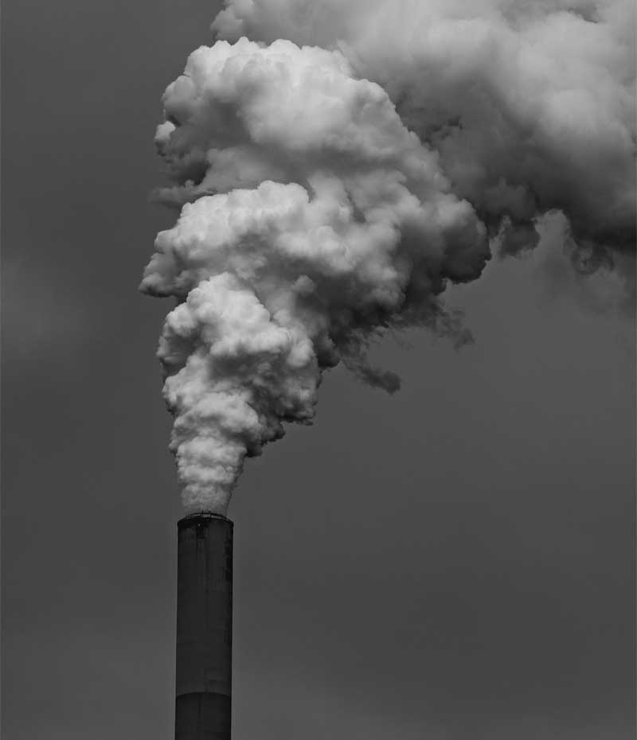
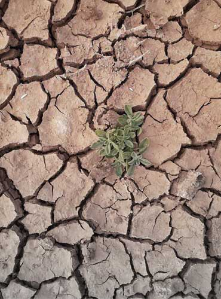
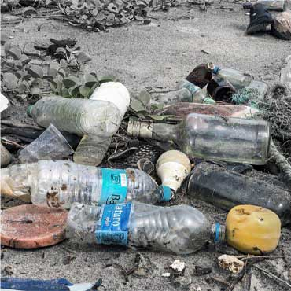
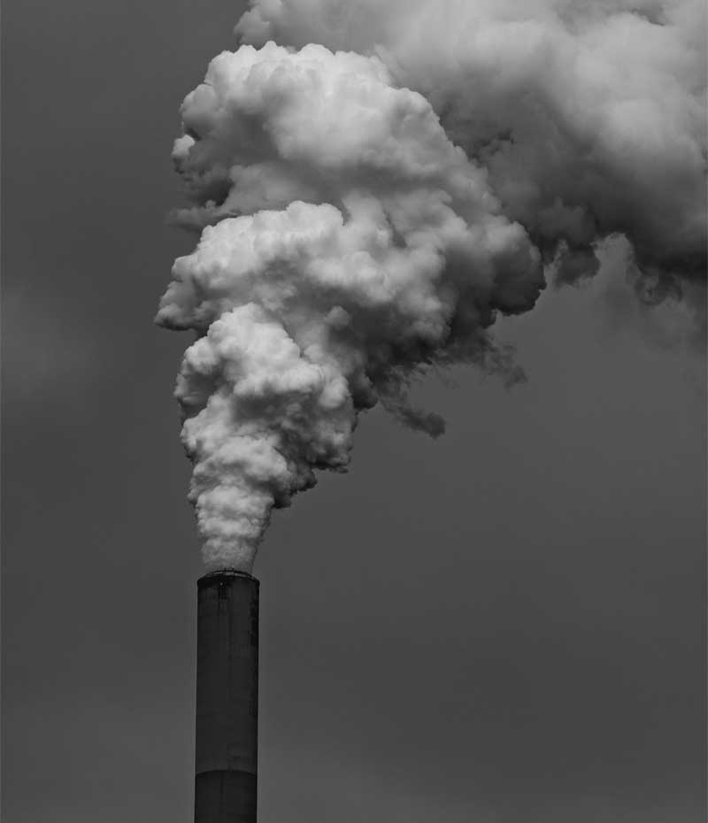
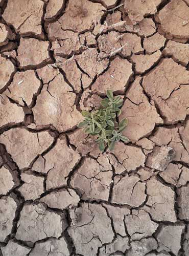
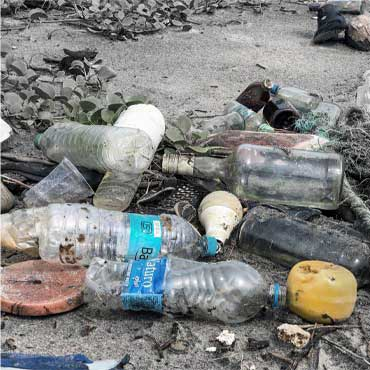

|  | 이대로 |
|
|  |  | |
|  | 이대로 |
|
|  |  | |
그린피스는 전 지구적인 환경문제의 원인을 밝혀내고,
이를 해결하기 위해 평화적이고 창의적인 방식으로 활동하는
캠페인 단체입니다. 그린피스는 지구를 위한 변화를 만드는 가장
큰 힘은 바로 '시민의 힘'이라고 믿습니다.
1.태양에너지의 변화
2.지구공전궤도의 변화
3.화산폭발과 지각변동
4.대기, 해양, 육지의
상호작용의 변화
1.온실가스 및
에어로졸의 증가
2.환경변화(산림변화, 도시화
토지이용 등)
3.화석연료의 연소
2019년 9월 초 뉴사우스웨일스 주 북부지역에서 시작한 산불이 2020년 2월까지 호주 전역에서 진행되었으며, 호주 면적 1800만 헥타르가 불에 탔고 동물 10억 마리가 희생되었던 사상 최악의 산불 사태였었다.
사흘 동안 1만 번 이상 내리친 벼락으로 인해 주 전역에 367건의 화재가 발생했다. 이번 산불로 서울 면적의 약 4배 규모의 산림이 소실되었으며, 6명이 사망하는 등 이상기후 피해가 발생했었다.
브라질 서남부에 있는 한반도 크기의 세계최대 습지초원, 동식물의 보고 판타날에서는 2021년 8월 한 달 동안 무려 1,500회 이상의 화재가 발생했다. 건기는 길고 극심해진 상태에서 대규모 개간으로 인해 빈번한 화재가 일어나고 있는 것이다.
2020년 새해에 내린 폭우로 인해 자카르타와 인근 지역의 수위가 순식간에 올라갔고, 그로 인해 침수 피해가 급속히 확산되었다. 이재민의 수가 10만 명이 넘고, 66명이 사망한 최악의 피해였다.
2020년 5월 말부터 진행했던 중국 중남부 지역에서 일어난 대규모 홍수로 약 7천만 명에 달하는 수재민이 발생했으며, 약 37조 원의 경제 손실이 일어났다. 1998년 중국에서 발생한 홍수 이후 가장 심각한 홍수였다고 한다.
뉴사우스웨일즈주의 리스모어 마을은 도심이 온통 물에 잠기고 전선이 끊어지는 등 가장 큰 피해를 입었다. 이 홍수로 리스모어 지역에서만 최소 13명의 사망자가 발생한 것으로 나타났다.
2019년 3~4월 경 우간다, 소말리아 등 아프리카 동부 지역에서 창궐하기 시작한 메뚜기 떼는 중동을 거쳐 파키스탄과 인도에 상륙했었고 그로 인해 약 5만 헥타르 규모 이상의 농경지가 손해를 입는 등 기후변화 피해가 발생했었다.
미국 루이지애나주에 4등급 허리케인 로라가 상륙하였으며, 4명이 사망하고 85만 가구의 전기 공급이 끊기는 등 재해 피해가 발생했었다.
2021년 6월 러시아 베르호얀스크 상공에서 영상 38도를 관측 이래 최고치를 기록하였다. 세계에서 가장 추운 도시인 베르호얀스크의 1885년부터 측정한 이례 사상 최고 기록으로 공식 인정된 기록이다.